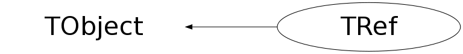

class TRef: public TObject
TRef Persistent Reference link to a TObject A TRef is a lightweight object pointing to any TObject. This object can be used instead of normal C++ pointers in case - the referenced object R and the pointer P are not written to the same file - P is read before R - R and P are written to different Tree branches When a top level object (eg Event *event) is a tree/graph of many objects, the normal ROOT Streaming mechanism ensures that only one copy of each object in the tree/graph is written to the output buffer to avoid circular dependencies. However if the object event is split into several files or into several branches of one or more Trees, normal C++ pointers cannot be used because each I/O operation will write the referenced objects. When a TRef is used to point to a TObject *robj, for example in a class with TRef fRef; one can do: fRef = robj; //to set the pointer This TRef and robj can be written with two different I/O calls in the same or different files, in the same or different branches of a Tree. If the TRef is read and the referenced object has not yet been read, the TRef will return a null pointer. As soon as the referenced object will be read, the TRef will point to it. If the referenced object is contained in a TTree it can be autoloaded using the TBranchRef mechanism, which is set up by simply calling TTree::BranchRef(). TRef also supports the complex situation where a TFile is updated multiple times on the same machine or a different machine. How does it work A TRef is itself a TObject with an additional transient pointer fPID. When the statement fRef = robj is executed, the following actions happen: - The pointer fPID is set to the current TProcessID. - The current ObjectNumber (see below) is incremented by one. - robj::fUniqueID is set to ObjectNumber. - In the fPID object, the element fObjects[ObjectNumber] is set to robj - ref::fUniqueID is also set to ObjectNumber. After having set fRef, one can immediatly return the value of robj using fRef.GetObject(). This function returns directly fObjects[fUniqueID] from the fPID object. When the TRef is written, the process id number pidf of fPID is written in addition to the TObject part of TRef (fBits,fUniqueID). When the TRef is read, its pointer fPID is set to the value stored in the TObjArray of TFile::fProcessIDs (fProcessIDs[pidf]). The pidf is stored in the bits 24->31 of the fUniqueID of the TRef. This implies that the number of TRefs in one process should not exceed 2**23 = 8388608 and that the number of processes (different jobs) writing TRefs to one file should be less than 256. See section "ObjectNumber" below for a recipee to minimize the object count. If the objectnumber exceeds this limit, it could be the sign that: -The object count is never reset (see below) -TRef is misused. When a referenced object robj is written, TObject::Streamer writes in addition to the standard (fBits,fUniqueID) the pidf. When this robj is read by TObject::Streamer, the pidf is read. At this point, robj is entered into the table of objects of the TProcessID corresponding to pidf. WARNING1: If MyClass is the class of the referenced object, The TObject part of MyClass must be Streamed. One should not call MyClass::Class()->IgnoreTObjectStreamer() WARNING2: A TRef cannot point to another TRef. ObjectNumber When an object is referenced (see TRef assignement operator or TRefArray::Add) a unique identifier is computed and stored in both the fUniqueID of the referenced and referencing object. This uniqueID is computed by incrementing by one the static global in TProcessID::fgNumber. fUniqueID is some sort of serial object number in the current session. One can retrieve at any time the current value of fgNumber by calling the static function TProcessID::GetObjectCount or set this number via TProcessID::SetObjectCount. To avoid a growing table of fObjects in TProcessID, in case, for example, one processes many events in a loop, it might be necessary to reset the ObjectNumber at the end of processing of one event. See an example in $ROOTSYS/test/Event.cxx (look at function Build). The value of ObjectNumber (say saveNumber=TProcessID::GetObjectCount()) may be saved at the beginning of one event and reset to this original value at the end of the event via TProcessID::SetObjectCount(saveNumber). These actions may be stacked. Action on Demand The normal behaviour of a TRef has been described above. In addition, TRef supports also "Actions on Demand". It may happen that the object referenced is not yet in memory, on a separate file or not yet computed. In this case TRef is able to automatically execute an action: - call to a compiled function (static function of member function) - call to an interpreted function - execution of a CINT script How to select this option? In the definition of the TRef data member in the original class, do: TRef fRef; //EXEC:execName. points to something When the special keyword "EXEC:" is found in the comment field of the member, the next string is assumed to be the name of a TExec object. When a file is connected, the dictionary of the classes on the file is read in memory (see TFile::ReadStreamerInfo). When the TStreamerElement object is read, a TExec object is automatically created with the name specified after the keywork "EXEC:" in case a TExec with a same name does not already exist. The action to be executed via this TExec can be specified with: - a call to the TExec constructor, if the constructor is called before opening the file. - a call to TExec::SetAction at any time. One can compute a pointer to an existing TExec with a name with: TExec *myExec = gROOT->GetExec(execName); myExec->SetAction(actionCommand); where - actionCommand is a string containing a CINT instruction. Examples: myExec->SetAction("LoadHits()"); myExec->SetAction(".x script.C"); When a TRef is dereferenced via TRef::GetObject, its TExec will be automatically executed. In the function/script being executed, one or more of the following actions can be executed: - load a file containing the referenced object. This function typically looks in the file catalog (GRID). - compute a pointer to the referenced object and communicate this pointer back to the calling function TRef::GetObject via: TRef::SetStaticObject(object). When the TExec is called, it has access to the dereferencing TRef by calling GetStaticObject() (TRef::GetObject() sets fgObject to "this" before the call to TExec). This can be useful for accessing the TRef's fUniqueID. As soon as an object is returned to GetObject, the fUniqueID of the TRef is set to the fUniqueID of the referenced object. At the next call to GetObject, the pointer stored in fPid:fObjects[fUniqueID] will be returned directly. An example of action on demand is shown in $ROOTSYS/test/Event.h with the member: TRef fWebHistogram; //EXEC:GetWebHistogram When calling fWebHistogram.GetObject(), the function GetObject will automatically invoke a script GetWebHistogram.C via the interpreter. An example of a GetWebHistogram.C script is shown below void GetWebHistogram() { TFile *f= TFile::Open("http://root.cern.ch/files/pippa.root"); f->cd("DM/CJ"); TH1 *h6 = (TH1*)gDirectory->Get("h6"); h6->SetDirectory(0); delete f; TRef::SetStaticObject(h6); } In the above example, a call to fWebHistogram.GetObject() executes the script with the function GetWebHistogram. This script connects a file with histograms: pippa.root on the ROOT Web site and returns the object h6 to TRef::GetObject. Note that if the definition of the TRef fWebHistogram had been: TRef fWebHistogram; //EXEC:GetWebHistogram() then, the compiled or interpreted function GetWebHistogram() would have been called instead of the CINT script GetWebHistogram.C Special case of a TRef pointing to an object with a TUUID If the referenced object has a TUUID, its bit kHasUUID has been set. This case is detected by the TRef assignement operator. (For example, TFile and TDirectory have a TUUID) The TRef fPID points directly to the single object TProcessUUID (deriving from TProcessID) and managing the list of TUUIDs for a process. The TRef kHasUUID bit is set and its fUniqueID is set to the fUniqueID of the referenced object. When the TRef is streamed to a buffer, the corresponding TUUID is also streamed with the TRef. When a TRef is read from a buffer, the corresponding TUUID is also read and entered into the global list of TUUIDs (if not already there). The TRef fUniqueID is set to the UUIDNumber. see TProcessUUID for more details. Array of TRef The special class TRefArray should be used to store multiple references. A TRefArray has one single pointer fPID for all objects in the array. It has a dynamic compact table of fUniqueIDs. Use a TRefArray rather then a collection of TRefs if all TRefs stem from the same process. Example: Suppose a TObjArray *mytracks containing a list of Track objects Suppose a TRefArray *pions containing pointers to the pion tracks in mytracks. This list is created with statements like: pions->Add(track); Suppose a TRefArray *muons containing pointers to the muon tracks in mytracks. The 3 arrays mytracks,pions and muons may be written separately.
Function Members (Methods)
public:
| TRef() | |
| TRef(TObject* obj) | |
| TRef(const TRef& ref) | |
| virtual | ~TRef() |
| void | TObject::AbstractMethod(const char* method) const |
| static Int_t | AddExec(const char* name) |
| virtual void | TObject::AppendPad(Option_t* option = "") |
| virtual void | TObject::Browse(TBrowser* b) |
| static TClass* | Class() |
| virtual const char* | TObject::ClassName() const |
| virtual void | TObject::Clear(Option_t* = "") |
| virtual TObject* | TObject::Clone(const char* newname = "") const |
| virtual Int_t | TObject::Compare(const TObject* obj) const |
| virtual void | TObject::Copy(TObject& object) const |
| virtual void | TObject::Delete(Option_t* option = "")MENU |
| virtual Int_t | TObject::DistancetoPrimitive(Int_t px, Int_t py) |
| virtual void | TObject::Draw(Option_t* option = "") |
| virtual void | TObject::DrawClass() constMENU |
| virtual TObject* | TObject::DrawClone(Option_t* option = "") constMENU |
| virtual void | TObject::Dump() constMENU |
| virtual void | TObject::Error(const char* method, const char* msgfmt) const |
| virtual void | TObject::Execute(const char* method, const char* params, Int_t* error = 0) |
| virtual void | TObject::Execute(TMethod* method, TObjArray* params, Int_t* error = 0) |
| virtual void | TObject::ExecuteEvent(Int_t event, Int_t px, Int_t py) |
| virtual void | TObject::Fatal(const char* method, const char* msgfmt) const |
| virtual TObject* | TObject::FindObject(const char* name) const |
| virtual TObject* | TObject::FindObject(const TObject* obj) const |
| virtual Option_t* | TObject::GetDrawOption() const |
| static Long_t | TObject::GetDtorOnly() |
| virtual const char* | TObject::GetIconName() const |
| static TObjArray* | GetListOfExecs() |
| virtual const char* | TObject::GetName() const |
| TObject* | GetObject() const |
| virtual char* | TObject::GetObjectInfo(Int_t px, Int_t py) const |
| static Bool_t | TObject::GetObjectStat() |
| virtual Option_t* | TObject::GetOption() const |
| TProcessID* | GetPID() const |
| static TObject* | GetStaticObject() |
| virtual const char* | TObject::GetTitle() const |
| virtual UInt_t | TObject::GetUniqueID() const |
| virtual Bool_t | TObject::HandleTimer(TTimer* timer) |
| virtual ULong_t | TObject::Hash() const |
| virtual void | TObject::Info(const char* method, const char* msgfmt) const |
| virtual Bool_t | TObject::InheritsFrom(const char* classname) const |
| virtual Bool_t | TObject::InheritsFrom(const TClass* cl) const |
| virtual void | TObject::Inspect() constMENU |
| void | TObject::InvertBit(UInt_t f) |
| virtual TClass* | IsA() const |
| virtual Bool_t | TObject::IsEqual(const TObject* obj) const |
| virtual Bool_t | TObject::IsFolder() const |
| Bool_t | TObject::IsOnHeap() const |
| virtual Bool_t | TObject::IsSortable() const |
| Bool_t | IsValid() const |
| Bool_t | TObject::IsZombie() const |
| virtual void | TObject::ls(Option_t* option = "") const |
| void | TObject::MayNotUse(const char* method) const |
| virtual Bool_t | TObject::Notify() |
| void | TObject::Obsolete(const char* method, const char* asOfVers, const char* removedFromVers) const |
| static void | TObject::operator delete(void* ptr) |
| static void | TObject::operator delete(void* ptr, void* vp) |
| static void | TObject::operator delete[](void* ptr) |
| static void | TObject::operator delete[](void* ptr, void* vp) |
| void* | TObject::operator new(size_t sz) |
| void* | TObject::operator new(size_t sz, void* vp) |
| void* | TObject::operator new[](size_t sz) |
| void* | TObject::operator new[](size_t sz, void* vp) |
| void | operator=(TObject* obj) |
| TRef& | operator=(const TRef& ref) |
| virtual void | TObject::Paint(Option_t* option = "") |
| virtual void | TObject::Pop() |
| virtual void | TObject::Print(Option_t* option = "") const |
| virtual Int_t | TObject::Read(const char* name) |
| virtual void | TObject::RecursiveRemove(TObject* obj) |
| void | TObject::ResetBit(UInt_t f) |
| virtual void | TObject::SaveAs(const char* filename = "", Option_t* option = "") constMENU |
| virtual void | TObject::SavePrimitive(ostream& out, Option_t* option = "") |
| virtual void | SetAction(const char* name) |
| virtual void | SetAction(TObject* parent) |
| void | TObject::SetBit(UInt_t f) |
| void | TObject::SetBit(UInt_t f, Bool_t set) |
| virtual void | TObject::SetDrawOption(Option_t* option = "")MENU |
| static void | TObject::SetDtorOnly(void* obj) |
| static void | SetObject(TObject* obj) |
| static void | TObject::SetObjectStat(Bool_t stat) |
| static void | SetStaticObject(TObject* obj) |
| virtual void | TObject::SetUniqueID(UInt_t uid) |
| virtual void | ShowMembers(TMemberInspector& insp) |
| virtual void | Streamer(TBuffer& b) |
| void | StreamerNVirtual(TBuffer& b) |
| virtual void | TObject::SysError(const char* method, const char* msgfmt) const |
| Bool_t | TObject::TestBit(UInt_t f) const |
| Int_t | TObject::TestBits(UInt_t f) const |
| virtual void | TObject::UseCurrentStyle() |
| virtual void | TObject::Warning(const char* method, const char* msgfmt) const |
| virtual Int_t | TObject::Write(const char* name = 0, Int_t option = 0, Int_t bufsize = 0) |
| virtual Int_t | TObject::Write(const char* name = 0, Int_t option = 0, Int_t bufsize = 0) const |
protected:
| virtual void | TObject::DoError(int level, const char* location, const char* fmt, va_list va) const |
| void | TObject::MakeZombie() |
Data Members
public:
| enum { | kNotComputed | |
| }; | ||
| enum TObject::EStatusBits { | kCanDelete | |
| kMustCleanup | ||
| kObjInCanvas | ||
| kIsReferenced | ||
| kHasUUID | ||
| kCannotPick | ||
| kNoContextMenu | ||
| kInvalidObject | ||
| }; | ||
| enum TObject::[unnamed] { | kIsOnHeap | |
| kNotDeleted | ||
| kZombie | ||
| kBitMask | ||
| kSingleKey | ||
| kOverwrite | ||
| kWriteDelete | ||
| }; |
protected:
| TProcessID* | fPID | !Pointer to ProcessID when TRef was written |
| static TObjArray* | fgExecs | List of execs |
| static TObject* | fgObject | In: this, Out: pointer to object (used by Action on Demand) |
Class Charts
{kind=link}
{kind=link}
{kind=link}
{kind=link}

Function documentation
Int_t AddExec(const char* name)
If Exec with name does not exist in the list of Execs, it is created. returns the index of the Exec in the list.
void SetAction(const char* name)
void SetAction(TObject* parent)
Find the action to be executed in the dictionary of the parent class
and store the corresponding exec number into fBits.
This function searches a data member in the class of parent with an
offset corresponding to this.
If a comment "TEXEC:" is found in the comment field of the data member,
the function stores the exec identifier of the exec statement
following this keyword.
void SetStaticObject(TObject* obj)
Static function to set the object found on the Action on Demand function. This function may be called by the user in the function called when a "EXEC:" keyword is specified in the data member field of the TRef. The function can get access to the dereferencing TRef (i.e. this)using the static function GetStaticObject().